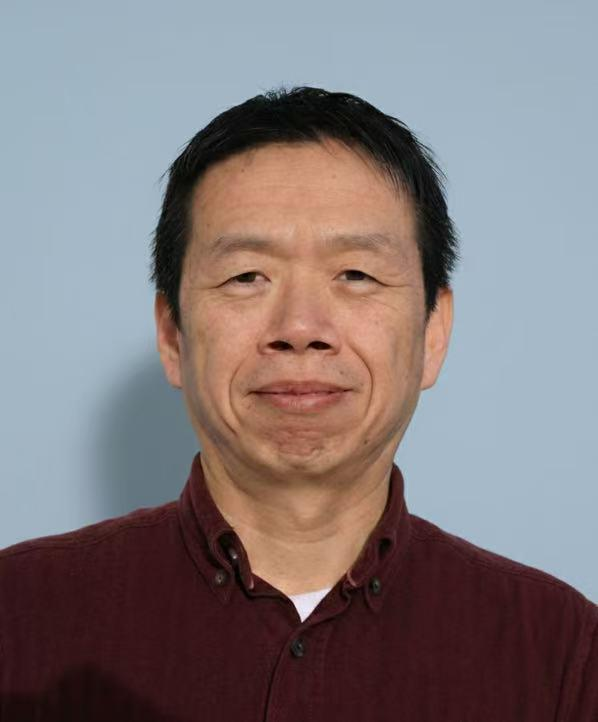

Keynote Speakers

Title: Michigan Mobility Outlook: Strategies for a Connected Future
Justine Johnson
Chief Mobility Officer, State of Michigan
Bio: As Michigan’s Chief Mobility Officer, Justine Johnson leads the Office of Future Mobility and Electrification (OFME) in advancing the state’s mission to build a safer, more equitable and more innovative mobility ecosystem. OFME serves as the coordinating body across state agencies, industry, academia and local communities to accelerate next-generation transportation solutions across land, air, and water – ensuring Michigan remains a global leader in mobility innovation while delivering real benefits to residents statewide.
Under her leadership, OFME has strengthened cross-agency collaboration to align state policy, infrastructure investment, workforce development and industry growth around a unified mobility strategy. She has steered more than $225 million in combined state, federal and industry investment toward electric and advanced mobility initiatives, translating policy into real-world innovation, economic opportunity and global competitiveness for Michigan.
A central priority of Justine’s work is expanding equitable access to mobility – ensuring that rural communities, urban neighborhoods, seniors, individuals with disabilities and historically underserved populations have access to reliable, affordable and sustainable transportation options.
Guided by Michigan’s MI Future Mobility Plan 2.0, she advances a people-centered mobility ecosystem that expands access to jobs, education, healthcare and community. She also spearheaded Executive Directive 2025-04, establishing a whole-of-government approach to advancing Advanced Aerial Mobility (AAM) in Michigan.
Title: Out of the Lab and Into the Wild: Studying the Implementation of Collaborative Robots in Healthcare
Susan Smith, Ph.D., RN
Director of Technology Research & Education, ChristianaCare
Bio: As Principal Investigator studying the implementation of collaborative robots (cobots) in the largest hospital in Delaware, Susan D. Smith, PhD, RN has made transformative contributions to the future of the healthcare workforce. Cobots have potential to augment patient care and hospital operations workflows; yet the complexities of the physical environment have proved challenging. In addition to her research PI role, Dr. Smith serves as the Director of Technology Research & Education at Christiana Care Health System. Across Delaware, she serves as the Christiana Care site Principal Investigator for the Delaware IDeA Network for Biomedical Research Excellence program and as the Christiana Care representative for Delaware’s Clinical Translational Research Professional Development Core.
Dr. Smith holds a Ph.D. in Nursing from Villanova University, along with advanced training in technology research in chronic and critical illness from the University of Pittsburgh. Her interdisciplinary work continues to shape the future of healthcare by leveraging cutting-edge technologies to address real-world clinical challenges.
Panel Discussion: It’s 2026 — Is Autonomous Driving Research Still Relevant?

Weisong Shi (Panel moderator)
Director, Connected and Autonomous Research Laboratory (CAR), University of Delaware
Bio: Weisong Shi is an Alumni Distinguished Professor and Chair of the Department of Computer and Information Sciences at the University of Delaware (UD), where he leads the Connected and Autonomous Research (CAR) Laboratory. He currently serves as the honorary director of the National Science Foundation (NSF) eCAT Industry-University Cooperative Research Center (IUCRC) (2023–2028), focusing on advancing electric, connected, and autonomous mobility technologies.
A globally recognized expert in edge computing, autonomous driving, and connected health, Dr. Shi authored the influential paper “Edge Computing: Vision and Challenges,” which has garnered over 10,000 citations. Prior to joining UD, he was a professor at Wayne State University (2002–2022), where he also served in leadership roles including Associate Dean for Research and Graduate Studies and Interim Chair of the Computer Science Department. He also served as an NSF program director (2013–2015).
Dr. Shi currently serves as Editor-in-Chief of IEEE Internet Computing Magazine and Elsevier Smart Health. He is the founding steering committee chair of several major conferences, including the ACM/IEEE Symposium on Edge Computing (SEC), IEEE/ACM CHASE, and IEEE MOST. He is also the General Chair of ACM MobiCom’24.
He is a Fellow of IEEE, a Distinguished Scientist of ACM, a former member of the NSF CISE Advisory Committee, and a council member of the Computing Community Consortium (CCC) under the Computing Research Association (CRA).

Simon Thompson
Director of Engineering, Research, at TIER IV
Bio: Simon Thompson is a robotics and autonomous systems expert specializing in robot autonomy, including localization, mapping, planning, and control. He currently serves as a research and engineering leader at TIER IV , where he drives internal R&D, global collaborations, and industry partnerships, particularly within the open-source Autoware ecosystem. Thompson received his degree from the Australian National University and previously spent nearly two decades as a senior researcher at Japan’s National Institute of Advanced Industrial Science and Technology (AIST), contributing to advanced robotics systems deployed in complex and hazardous environments. His work bridges foundational robotics research with real-world autonomous driving applications, with a strong emphasis on scalable, reliable autonomy systems.

Ziran Wang
Assistant Professor, Purdue University
Bio: Dr. Ziran Wang is an Assistant Professor in the Lyles School of Civil and Construction Engineering, with a courtesy appointment in the Elmore Family School of Electrical and Computer Engineering, at Purdue University, where he also serves as Assistant Director of the Institute for Control, Optimization and Networks (ICON). He leads the Purdue Digital Twin Lab, focusing on building AI-driven digital replicas of real-world systems using big data, edge/cloud computing, and mixed reality, with applications in autonomous vehicles and intelligent transportation systems. Prior to joining Purdue, he was a Principal Researcher at Toyota Motor North America R&D InfoTech Labs, where he led the Digital Twin Roadmap. Dr. Wang earned his Ph.D. from the University of California, Riverside under Dr. Matthew J. Barth, with a dissertation on cooperative vehicle–infrastructure systems in connected and automated vehicle environments. He has authored over 80 refereed publications and 50+ patent applications spanning autonomous driving, digital twins, and human-autonomy teaming. His work has been showcased at CES and recognized with numerous honors, including the U.S. Department of Transportation’s National Center for Sustainable Transportation Dissertation Award, the SAE Vincent Bendix Automotive Electronics Engineering Award, the SAE Arch T. Colwell Merit Award, and multiple best paper awards.
Tony G. Geara
Former Deputy Chief of Mobility Innovation, City of Detroit
Bio: Tony G. Geara, P.E., PTOE, was the former Deputy Chief of Mobility Innovation for the City of Detroit, where he envisioned, designed, and led cutting-edge mobility solutions. His work spans a broad spectrum of innovation domains, including Intelligent Transportation Systems (ITS), connected and automated vehicles (CAV), electrification, AI and data analytics, applied research, and Smart City initiatives, while forging strategic connections across the public sector, startups, OEMs, researchers, consultants, and other global stakeholders.
With over a decade of consulting experience and more than six years in public service, Tony brings a diverse international background in transportation planning, systems engineering, and mobility innovation. He has led numerous traffic and infrastructure projects across varied contexts, consistently emphasizing safety, operational excellence, and human-centered design.
Tony is deeply committed to advancing transportation equity and regularly engages with residents and stakeholders to ensure every voice informs Detroit’s mobility future. His commitment to inclusion is grounded in lived experience, as he is a daily user of public transit, bicycles, and shared mobility services.
Outside of work, Tony is an avid rowing enthusiast, a passionate cook of Lebanese cuisine, and a proud father of four energetic children. He is married to an academic researcher who specializes in organizational behavior and gender roles in the workplace.
Wende Zhang
Director - ADAS Sensors and Sensing Systems at General Motors
Bio: Dr. Wende Zhang is the director of ADAS Sensing and Localization SW at General Motors (GM). He first joined GM as a senior researcher in 2005, and has since worked as a tech specialist, BFO (BOM Family Owner) of viewing systems, BFO of lidar systems and Technical Fellow of Sensing Systems. Zhang was the technical lead on computer vision and the embedded researcher in the GM-Carnegie Mellon automated driving team that won the DARPA Urban Challenge in 2007. Holding 100+ patents related to safety related technology, Zhang has worked on the award-winning safety technologies including the 360⁰ View System, Rear Camera Mirrors, Super Cruise, and Invisible Trailer with GM highest technical awards (Boss Kettering Award) 4 times in 2016, 2017, 2018, and 2020. Zhang received his master’s degree and Ph.D. in Electrical and Computer Engineering from Carnegie Mellon University and an MBA degree from Indiana University.

Dalong Li
Senior Applied Scientist, Samsara
Bio: Dalong Li is a leading expert in computer vision and machine learning with over 20 years of experience spanning foundational AI research and large-scale industrial deployment in autonomous systems. He currently serves as a Senior Applied Scientist at Samsara, where he leads research and development in Perception and AI Safety, focusing on the next generation of connected operations and vision-based safety systems.
Prior to joining Samsara, Dr. Li was the Head of Auto Labeling and Data Loop at Torc Robotics (a subsidiary of Daimler Truck), where he architected and scaled the AAA Framework (Auto Curation, Auto Labeling, and Augmentation). His work was instrumental in transforming offline perception pipelines, utilizing Knowledge Distillation and Active Learning to solve complex "long-tail" scenario mining challenges for Level 4 autonomous trucking.
A recognized voice in the field of technical integrity and safety-critical AI, Dr. Li is a co-author of international industry standards, including ISO/TR 4804 (Safety and Cybersecurity for Automated Driving Systems). His career bridges deep academic rigor with real-world engineering, having spent decades developing robust perception systems for diverse and challenging environments. Dr. Li received his Ph.D. in Electrical and Computer Engineering from the Georgia Institute of Technology (Georgia Tech). He is a frequent speaker at major industry summits, including the IEEE AI Southeast Michigan Summit, and is a committed advocate for Data-Centric AI and sensing safety.
Jeff White
Chief Architect – Office of the CTO, Ernst and Young LLP
Bio: Jeff serves as Chief Architect for Ernst & Young LLP Americas, leading product development for emerging technologies including AI, simulation, and advanced computation. He chairs the EY Enterprise Architecture Council and directs the emerging technology lab, driving innovation and research across the organization.
Previously at Dell Technologies, Jeff held executive roles including AI Factory and AI Edge Product Lead, overseeing business and technical roadmaps for enterprise AI infrastructure. As CTO for Dell’s Edge business, he pioneered edge application management, distributed platform control, and AI operations for connected vehicles and edge systems.
Jeff’s career spans leadership positions at HPE, Ericsson, Alcatel-Lucent, and early-stage AI/robotics ventures, including serving as CTO of Elefante Group’s stratospheric communications platform. His expertise encompasses distributed systems, edge computing, machine reasoning, and enterprise architecture.
With 26 granted patents and 40 applications spanning AI, distributed systems, cybersecurity, and edge technology, Jeff is recognized as an innovation leader. He formerly chaired the North Texas Technology Council (Tech Titans) and holds credentials as an IEEE Senior Member and Certified Agile Product Owner.